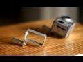
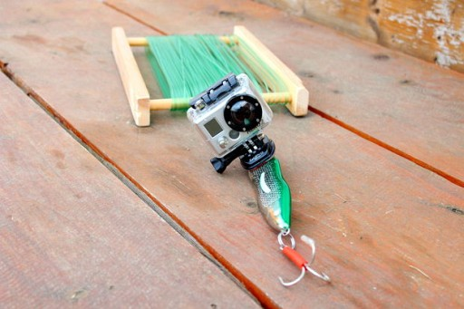
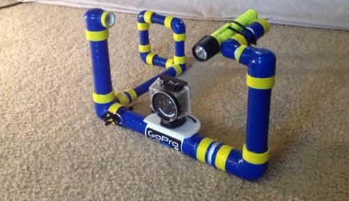
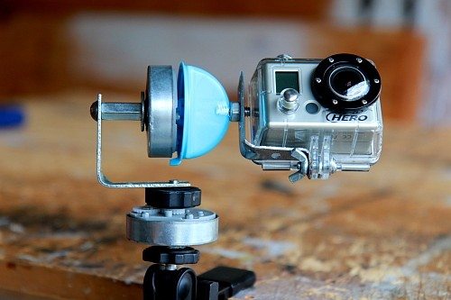
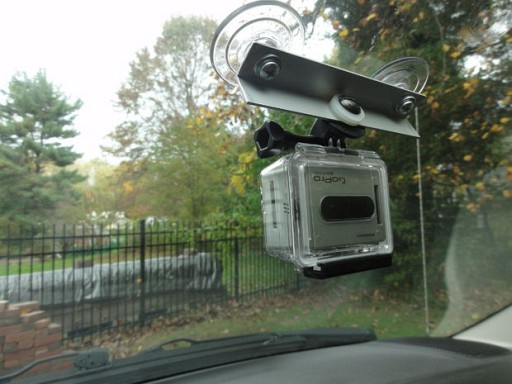
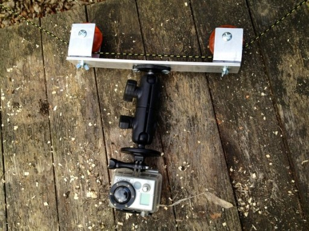
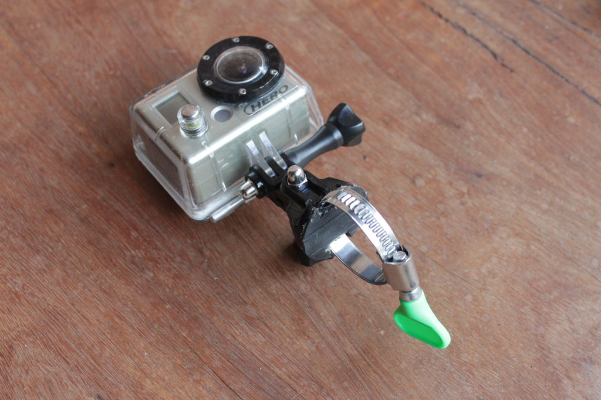
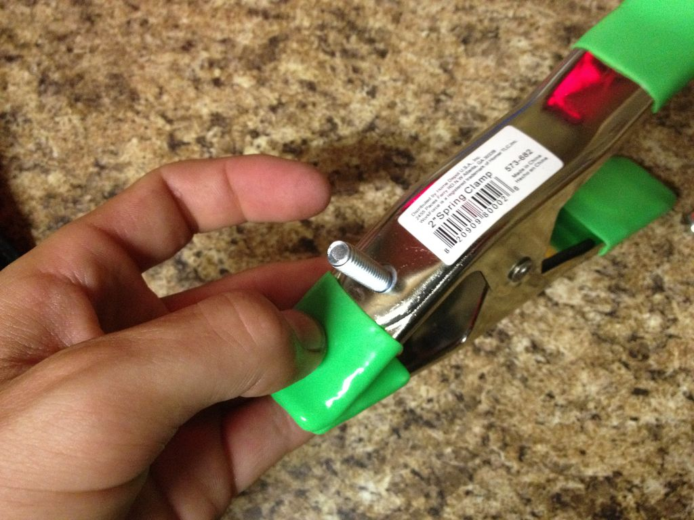

Chernowii
Konrad Iturbe

DIY
I love to build DIY mounts/accesories for the GoPro HERO camera!
There are videos on my Vimeo DIY GoPro Album.
A page that I really recommend to DIY GoPro makers is: DIYGoPro.com
In GOOGLE, there are thousend of tutorials for DIY mounts.
Click on the picture to go to its respective webpage:
|  |  |  |  |  |  |  |  |